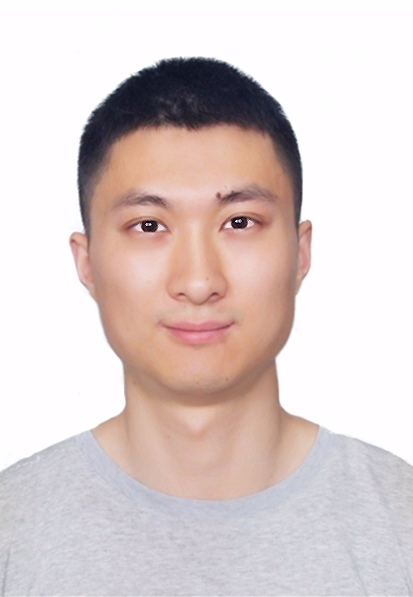

Jian Li (李建)
Research Scientist
Huawei Noah's Ark Lab,
Shenzhen, China
[Curriculum Vitae] [Google Scholar]
Email: lijianjack [at] gmail.com
General
Jian Li is a research scientist at Huawei Noah's Ark Lab. He obtained his Ph.D. degree in Computer Science from The Chinese University of Hong Kong (CUHK) in 2020, supervised by Prof. Michael R. Lyu. He obtained his bachelor's degree with the Outstanding Honor from University of Electronic Science and Technology of China (UESTC) in 2015. From July 2019 to March 2020, he was visiting at Stanford University advised by Prof. Monica Lam.
Research Interests
Natural Language Processing, Information Retrieval, Question Answering, Machine Translation.
Internship Opportunity
We are hiring research interns! If you are interested in deep learning for question answering and information retrieval, feel free to contact me!
Publications
-
Jian Li, Xing Wang, Zhaopeng Tu, Michael R. Lyu,
On the Diversity of Multi-Head Attention
Journal of Neurocomputing (SCI)
[PDF]
-
Silei Xu, Giovanni Campagna, Jian Li, Monica S. Lam,
Schema2QA: Answering Complex Queries on the Structured Web with a Neural Model
CIKM'20: Proceedings of the 2020 ACM International Conference on Information and Knowledge Management.
[PDF]
-
Jian Li, Xing Wang, Baosong Yang, Shuming Shi, Michael R. Lyu, Zhaopeng Tu,
Neuron Interaction Based Representation Composition for Neural Machine Translation
AAAI'20: Proceedings of the 2020 AAAI Conference on Artificial Intelligence.
[PDF]
-
Jian Li, Baosong Yang, Zi-Yi Dou, Xing Wang, Michael R. Lyu, Zhaopeng Tu,
Information Aggregation for Multi-Head Attention with Routing-by-Agreement
NAACL'19: Proceedings of the 2019 Annual Conference of the North American Chapter of the Association for Computational Linguistics.
[PDF]
-
Baosong Yang, Jian Li, Derek Wong, Lidia Chao, Xing Wang, Zhaopeng Tu,
Context-Aware Self-Attention Networks
AAAI'19: Proceedings of the 2019 AAAI Conference on Artificial Intelligence.
[PDF]
-
Jian Li, Zhaopeng Tu, Baosong Yang, Michael R. Lyu and Tong Zhang
Multi-Head Attention with Disagreement Regularization
EMNLP'18: Proceedings of the 2018 International Conference on Empirical Methods in Natural Language Processing.
[PDF]
-
Jian Li, Yue Wang, Michael R. Lyu, Irwin King
Code Completion with Neural Attention and Pointer Networks
IJCAI'18: Proceedings of the 2018 International Joint Conference on Artificial Intelligence.
[PDF]
-
Jian Li, Pinjia He, Jieming Zhu, Michael R. Lyu
Software Defect Prediction via Convolutional Neural Network
QRS'17: Proceedings of the 2017 IEEE International Conference on Software Quality, Reliability and Security.
[PDF]
-
Pinjia He, Jieming Zhu, Shilin He, Jian Li, Michael R. Lyu
Towards Automated Log Parsing for Large-Scale Log Data Analysis
TDSC'17: IEEE Transactions on Dependable and Secure Computing, 2017.
[PDF]
-
Pinjia He, Jieming Zhu, Shilin He, Jian Li, Michael R. Lyu
An Evaluation Study on Log Parsing and Its Use in Log Mining
DSN'16: Proceedings of the 46th Annual IEEE/IFIP International Conference on Dependable Systems and Networks, 2016.
[PDF]
Academic Services
- PC Member: ACL, EMNLP, NAACL, AAAI, IJCAI
- Reviewer: NeurIPS, ICML, WWW, KDD, WSDM